コード
pacman::p_load(
sf, dplyr, tidyr, ggplot2, classInt, scales, gt,
jpndistrict, stringi, sfdep, spdep, spatialreg, units,
lubridate, fixest
)
theme_set(theme_bw())
theme_update(legend.position = "bottom")英語教育の研究や政策分析において、地理空間的なパターンは避けて通れない問題です。たとえば、以下のような状況を想像してみてください。
これらはいずれも空間的自己相関（spatial autocorrelation）という統計的現象に関わる問題です。第13章で時系列データにおける自己相関（temporally adjacent observations are correlated）を学びましたが、空間的自己相関はその空間版にあたります。時間軸上で「近い時点ほど似ている」ように、地理空間上でも「近い地域ほど似ている」という傾向があり、これを無視するとOLSの標準誤差が過小推定され、第一種の過誤率が膨張します。第13章の自己相関関数（ACF）が時間方向の相関構造を可視化したのと同様に、本章で扱う Moran’s I は空間方向の相関構造を定量化する指標です。
第14章（入門編）では、sf オブジェクトの構築、形状データとの結合、コロプレス図の作成、パネルデータの整形といった機械的な基礎を学びました。本章では、その基礎の上に分析的なツールキットを構築します。具体的には、空間自己相関の厳密な検定、空間回帰モデル（SAR/SEM）によるモデリング、そして差の差法（DID）を用いた施策評価を、英語教育研究の文脈に即して展開します。
本章は以下の4つのパートで構成されています。
推奨: Part A → B を順に読んでください。Part C は施策評価に関心がある場合に、Part D は参考資料として活用してください。
まずは本章で使用するパッケージを読み込みます。pacman::p_load は未インストールのパッケージを自動的にインストールして読み込みます。
pacman::p_load(
sf, dplyr, tidyr, ggplot2, classInt, scales, gt,
jpndistrict, stringi, sfdep, spdep, spatialreg, units,
lubridate, fixest
)
theme_set(theme_bw())
theme_update(legend.position = "bottom")主なパッケージの役割:
本章の分析は、以下の意思決定フローに沿って進みます。各ステップで「何を検証し、結果に応じて何を選択するか」を明示することが、空間分析の要諦です。常に検証し、決して仮定しないこと（test, never assume）が基本姿勢です。
flowchart TD
A["横断/パネルデータ<br/>＋地理座標"] --> B{"空間自己相関は<br/>あるか？"}
B -->|"Moran's I で検定"| C{"グローバル Moran<br/>有意？"}
C -->|"Yes"| D["LISA: どこにクラスタ？"]
C -->|"No"| E["標準的な回帰で対応可"]
D --> F["OLS ＋ 残差診断"]
F --> G{"残差に空間<br/>自己相関？"}
G -->|"Yes"| H["LM 検定: Lag or Error?"]
H -->|"LMlag 有意"| I["SAR / SDM"]
H -->|"LMerr 有意"| J["SEM"]
H -->|"両方有意"| K["SDM / SARAR"]
G -->|"No"| L["OLS で十分"]
I --> M["インパクト分解<br/>＋モデル比較"]
J --> M
K --> Mflowchart TD
A["横断/パネルデータ<br/>＋地理座標"] --> B{"空間自己相関は<br/>あるか？"}
B -->|"Moran's I で検定"| C{"グローバル Moran<br/>有意？"}
C -->|"Yes"| D["LISA: どこにクラスタ？"]
C -->|"No"| E["標準的な回帰で対応可"]
D --> F["OLS ＋ 残差診断"]
F --> G{"残差に空間<br/>自己相関？"}
G -->|"Yes"| H["LM 検定: Lag or Error?"]
H -->|"LMlag 有意"| I["SAR / SDM"]
H -->|"LMerr 有意"| J["SEM"]
H -->|"両方有意"| K["SDM / SARAR"]
G -->|"No"| L["OLS で十分"]
I --> M["インパクト分解<br/>＋モデル比較"]
J --> M
K --> M
空間分析では「空間モデルを使えば常に良い」わけではありません。上のフローチャートが示すように、各段階で検定結果を確認し、データが求めるモデルを選択します。空間自己相関が存在しないデータに空間モデルを適用しても、推定の効率が悪くなるだけです。逆に、空間自己相関が存在するのにOLSを使い続けると、推論が不正確になります。
本章では以下のシナリオに基づくシミュレーションデータを使用します。
シナリオ: 2021年度に一部の都道府県（処置群）がALT配置時間の拡充施策を導入した。研究者は、この施策が都道府県レベルの英語学力スコア（
eng_score）に与えた効果を推定したい。統制変数として、教員の平均TOEICスコア（teacher_toeic: 教員の英語力の代理指標）と英検準2級以上取得率（eiken_rate: 地域の英語学習文化の代理指標）を用いる。観測期間は2015–2024年の10年間である。
シミュレーションデータには「真の効果」（ここでは \(\tau = 3.0\)）が研究者に既知であるという利点があります。分析手法が正しく機能しているかどうかを、推定値と真値の比較によって検証できます。実データ分析に進む前に、まずシミュレーションで手法の振る舞いを理解することは、方法論的リテラシーの重要な一部です。
入門編と同様の都道府県スキームを「jpndistrict が使えれば実データ形状、なければダミー形状」で再現します。処置群は pref_id %% 5 == 0 で機械的に割り当て、施策効果 \(\tau\) をポスト期間（post = 1）にのみ付加します。
# 形状：jpndistrict があれば使い、無ければ47セルのヘクス状ダミー
pref_sf <- tryCatch(
{
jpndistrict::jpn_pref(quality = 40) |>
st_transform(4326) |>
dplyr::select(pref_name = prefecture)
},
error = function(e){
grid <- st_make_grid(
st_as_sfc(st_bbox(c(xmin=130, xmax=146, ymin=30, ymax=46), crs = 4326)),
n = c(7,7), what = 'polygons', square = FALSE
)
grid <- st_sf(geometry = grid) |>
dplyr::mutate(id = dplyr::row_number()) |>
dplyr::slice(2:48) |>
dplyr::mutate(pref_name = paste0('Pref', sprintf('%02d', dplyr::row_number()))) |>
dplyr::select(pref_name)
grid
}
)
set.seed(2024)
years <- 2015:2024
# ID と処置割当（例：5の倍数IDを treated=1）
pref_key <- pref_sf |>
st_drop_geometry() |>
mutate(pref_id = as.integer(factor(pref_name)))
policy_year <- 2021
panel <- expand.grid(pref_name = pref_key$pref_name, year = years) |>
tibble::as_tibble() |>
left_join(pref_key, by = 'pref_name') |>
mutate(
treated = as.integer(pref_id %% 5 == 0),
post = as.integer(year >= policy_year),
base = 55 + (pref_id %% 10),
trend = (year - min(year)) * 0.5 + rnorm(dplyr::n(), sd = 0.6),
tau = 3.0, # 施策効果の真値（例）
eng_score = round(base + trend + tau * treated * post + rnorm(dplyr::n(), sd = 5), 1),
teacher_toeic = round(620 + (pref_id %% 12) * 8 + (year - min(year)) * 3 + rnorm(dplyr::n(), sd = 30)),
eiken_rate = pmin(pmax(0.12 + (pref_id %% 8) * 0.02 + (year - min(year)) * 0.01 + rnorm(dplyr::n(), sd = 0.03), 0), 1)
)
latest_year <- max(years)
map_df <- pref_sf |>
left_join(filter(panel, year == latest_year), by = 'pref_name')
ggplot(map_df) +
geom_sf(aes(fill = eng_score), color = 'white') +
scale_fill_viridis_c(option = 'C') +
theme_bw() +
labs(title = paste0('English Score (', latest_year, ', Simulated)'))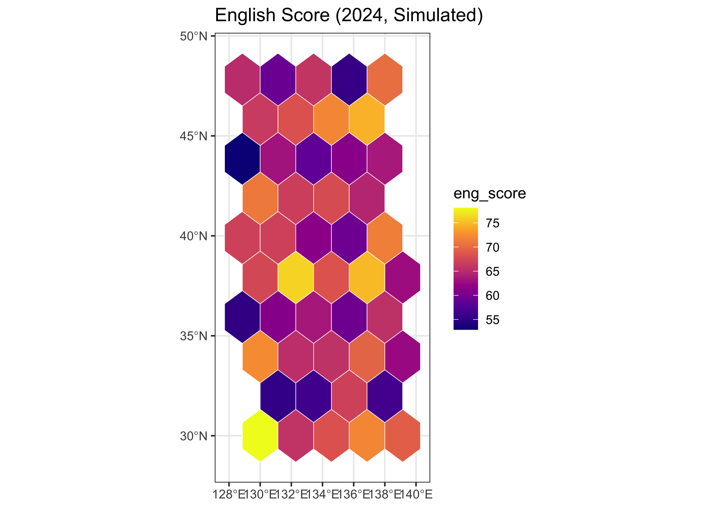
地図の読み方: この地図を観察してみてください。高いスコアを示す都道府県（暖色）が空間的にまとまって現れているでしょうか、それとも全国にランダムに散らばっているでしょうか。もし前者であれば、それは空間的自己相関の視覚的な証拠です。次節以降で、この直感を統計的に検証します。
本章の分析で繰り返し登場する主要な概念を整理します。
nb に重み（行標準化など）を付加したもの。Moran’s I の検定や空間回帰モデルは、この listw を入力として要求する。通常の回帰分析（OLS）では、各観測値は互いに独立であると仮定します。空間分析では、この仮定を緩め、空間重み行列 \(\mathbf{W}\) を通じて「誰が誰の隣人か」を明示的に定義します。これは、回帰モデルにおける共変量の選択に似ています。共変量の選択がモデルの推定結果を左右するように、\(\mathbf{W}\) の選択もまた、空間自己相関の検定結果や空間回帰モデルの推定値に影響を及ぼします。つまり、\(\mathbf{W}\) の構築は分析者のモデリング判断であり、データから自動的に決まるものではありません。
第14章で紹介したように、代表的な隣接定義には3種類があります。
都道府県レベルの英語教育分析では、Queen がよい出発点です。日本の都道府県は比較的整った形状を持ち、辺と頂点の共有の区別は実質的に大きな差を生みません。ただし、仮説とする空間的影響のメカニズムが「行政的な協力や制度的近接性」であれば隣接ベース（Queen/Rook）が、「教員の通勤圏や情報の地理的到達範囲」であれば距離ベース（kNN）が理論的に整合します。
以下では3種の重みを構築し、行標準化（style = 'W'）を適用します。行標準化とは、各地域の重みの行和が1になるように調整することです。これにより、隣接数の多い地域も少ない地域も「隣接の平均的な影響」として同じスケールで比較でき、モデルの係数解釈が安定します。
# Queen / Rook 隣接
nb_queen <- spdep::poly2nb(map_df)
nb_rook <- spdep::poly2nb(map_df, queen = FALSE)
# k近傍（重心ベース）
coords <- st_coordinates(st_centroid(st_geometry(map_df)))
nb_knn <- spdep::knn2nb(spdep::knearneigh(coords, k = 4))
lw_queen <- spdep::nb2listw(nb_queen, style = 'W')
lw_rook <- spdep::nb2listw(nb_rook, style = 'W')
lw_knn <- spdep::nb2listw(nb_knn, style = 'W')
data.frame(
type = c('queen','rook','knn4'),
mean_degree = c(mean(card(nb_queen)), mean(card(nb_rook)), mean(card(nb_knn)))
) |>
gt() |>
tab_header(title = 'Mean Degree by Weight Type')| Mean Degree by Weight Type | |
| type | mean_degree |
|---|---|
| queen | 4.765957 |
| rook | 4.765957 |
| knn4 | 4.000000 |
読み方: 平均次数（1地域あたりの平均隣接数）を確認してください。極端に小さい場合は孤立ノードの存在が疑われ、多くの空間統計手法が失敗します。逆に大きすぎると、空間的な「局所性」が薄れ、検定の感度が低下します。
空間重み行列 \(\mathbf{W}\) は数値の行列ですが、それだけでは「どの都道府県が誰と繋がっているか」を直感的に理解しにくいです。以下のコードでは、各都道府県の重心同士を線で結ぶことで、Queen と kNN の隣接構造をネットワーク図として可視化します。
本章のRコードでは |> （ネイティブパイプ）を多用します。これは「左辺の結果を右辺の関数の第1引数に渡す」操作です。
# 以下の2つは同じ意味:
result <- f(g(h(x))) # 入れ子（内側から読む）
result <- x |> h() |> g() |> f() # パイプ（左から右へ順に読む）パイプを使うと、データ変換の流れを「上から下へ」読めるため、複雑な処理でも可読性が高まります。
# 重心座標を sf ポイントとして取得
centroids <- st_centroid(st_geometry(map_df))
coords_df <- st_coordinates(centroids) |>
as.data.frame() |>
setNames(c('x', 'y'))
# nb オブジェクトから隣接ペアの線分データを生成する関数
nb_to_lines <- function(nb, coords, label) {
edges <- data.frame()
for (i in seq_along(nb)) {
for (j in nb[[i]]) {
if (j > i) { # 重複を避ける
edges <- rbind(edges, data.frame(
x = coords[i, 1], y = coords[i, 2],
xend = coords[j, 1], yend = coords[j, 2],
type = label
))
}
}
}
edges
}
edges_queen <- nb_to_lines(nb_queen, coords_df, 'Queen')
edges_knn <- nb_to_lines(nb_knn, coords_df, 'kNN (k=4)')
edges_all <- rbind(edges_queen, edges_knn)
ggplot() +
geom_sf(data = map_df, fill = 'grey95', color = 'grey70', linewidth = 0.3) +
geom_segment(data = edges_all,
aes(x = x, y = y, xend = xend, yend = yend),
color = '#d73027', alpha = 0.5, linewidth = 0.4) +
geom_point(data = coords_df, aes(x = x, y = y),
color = '#2c3e50', size = 1.5) +
facet_wrap(~ type, ncol = 2) +
theme_bw() +
labs(title = 'Adjacency Network: Queen vs kNN (k=4)',
x = 'Longitude', y = 'Latitude')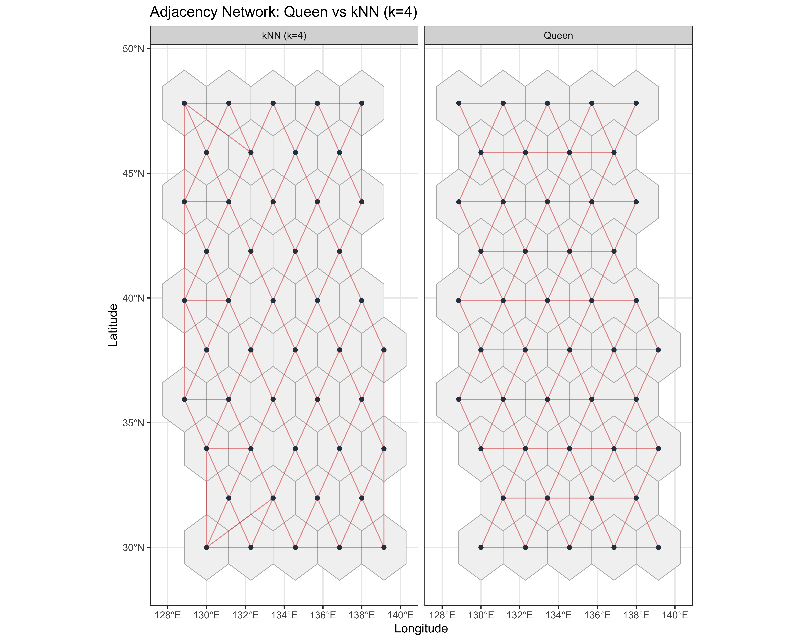
この図では、赤い線が「隣接」として定義されたペアを示しています。facet_wrap() を用いて Queen と kNN の2つの定義を並列比較（small multiples）しています。
本章で繰り返し登場する ggplot2 のパターンを整理します。
ggplot(data) + # データを指定
geom_sf(aes(fill = variable)) + # 地図を描画（fill で色分け）
scale_fill_viridis_c(option = 'C') + # カラーパレット（連続値）
theme_bw() + # テーマ（背景・グリッド）
labs(title = '...', fill = '...') # タイトル・凡例ラベルgeom_sf(): sf オブジェクトをそのまま地図として描画する。aes(fill = ...) で塗り分け変数を指定する。scale_fill_*: 色の対応関係を制御する。viridis_c（連続値）、manual（カテゴリ）、gradient2（発散型、中央値あり）が頻出。facet_wrap(~ variable): 1つの変数でグループ分けし、小さな図（パネル）を並べる。年次比較や条件比較に有効。theme_bw(): 背景をシンプルにし、データに焦点を当てる。学術論文向きのテーマ。regions with no neighbours: 孤立ノードが発生している。kNNの \(k\) を引き上げるか、距離閾値で接続する。not a listw object: nb オブジェクトをそのまま渡している。nb2listw(nb, style = 'W') で変換してから渡す。st_crs() で座標参照系を確認し、st_transform() で統一する。\(\mathbf{W}\) の選択はモデリングの仮定であるため、分析結果が \(\mathbf{W}\) の定義に敏感かどうかを常に確認すべきです。以下では、3種の重みで Moran’s I と空間回帰モデルの AIC を比較します。もし Moran’s I がいずれの重みでも正で有意であれば、空間自己相関はデータの頑健な特徴であり、隣接定義の選択の人工物ではないと判断できます。
y <- map_df$eng_score
dat_reg <- map_df |>
st_drop_geometry() |>
dplyr::select(eng_score, teacher_toeic, eiken_rate)
summarize_w <- function(lw, name){
mi <- unname(spdep::moran.test(y, lw)$estimate[1])
s1 <- spatialreg::lagsarlm(eng_score ~ teacher_toeic + eiken_rate, data = dat_reg, listw = lw)
s2 <- spatialreg::errorsarlm(eng_score ~ teacher_toeic + eiken_rate, data = dat_reg, listw = lw)
tibble::tibble(type = name, MoranI = mi, AIC_SAR = AIC(s1), AIC_SEM = AIC(s2))
}
bind_rows(
summarize_w(lw_queen, 'queen'),
summarize_w(lw_rook, 'rook'),
summarize_w(lw_knn, 'knn4')
) |>
gt() |>
tab_header(title = 'Sensitivity of Moran I / AIC to Weight Type')| Sensitivity of Moran I / AIC to Weight Type | |||
| type | MoranI | AIC_SAR | AIC_SEM |
|---|---|---|---|
| queen | -0.1074181 | 289.7740 | 289.8992 |
| rook | -0.1074181 | 289.7740 | 289.8992 |
| knn4 | -0.1873915 | 289.0079 | 289.2882 |
空間重みの構築と検証が完了しました。次に、このデータにおいて英語スコアが空間的にクラスタしているかどうかを、統計的に厳密に検定します。
第13章で学んだ時間的自己相関を思い出してください。時系列データでは、ある時点の観測値は時間的に近い過去の観測値と相関する傾向がありました（ACFプロットで可視化）。空間的自己相関はこの概念の空間版です。「ある地域の値は、地理的に近い地域の値と相関するか？」を問います。
この問いに答える指標が Moran’s I です。Moran’s I は、Pearson の相関係数 \(r\) と類似した役割を果たします。Pearson の \(r\) が2つの変数間の線形関連の強さと方向を測るのに対し、Moran’s I はある地点の値とその隣接地域の加重平均値との線形関連を測ります。
グローバル Moran’s I はデータ全体の空間自己相関の傾向を1つの数値で要約します。統計的有意性はモンテカルロ置換検定で評価します。これは、観測値を地域にランダムに再配置する操作を多数回（ここでは999回）繰り返し、「ランダムな配置から得られる I の分布」と実際の I を比較する方法です。
mc_queen <- spdep::moran.mc(y, lw_queen, nsim = 999)
mc_rook <- spdep::moran.mc(y, lw_rook, nsim = 999)
mc_knn <- spdep::moran.mc(y, lw_knn, nsim = 999)
list(queen = mc_queen, rook = mc_rook, knn4 = mc_knn)$queen
Monte-Carlo simulation of Moran I
data: y
weights: lw_queen
number of simulations + 1: 1000
statistic = -0.10742, observed rank = 186, p-value = 0.814
alternative hypothesis: greater
$rook
Monte-Carlo simulation of Moran I
data: y
weights: lw_rook
number of simulations + 1: 1000
statistic = -0.10742, observed rank = 169, p-value = 0.831
alternative hypothesis: greater
$knn4
Monte-Carlo simulation of Moran I
data: y
weights: lw_knn
number of simulations + 1: 1000
statistic = -0.18739, observed rank = 40, p-value = 0.96
alternative hypothesis: greater英語教育研究にとっての意味: Moran’s I が正で有意であれば、都道府県別の英語スコアは地理的にランダムに分布しているわけではなく、高スコアの地域は高スコアの地域の近くに、低スコアの地域は低スコアの地域の近くに集まる傾向があることを意味します。これは2つの重要な含意を持ちます。第一に、OLS回帰の残差にも空間的相関が残っている可能性があり、標準誤差の信頼性に疑問が生じます（Section 6 で検証）。第二に、政策拡散や共通の地域経済条件など、実質的に興味深い空間プロセスが存在する可能性を示唆します。
moran.mc では反復数（nsim）が十分に大きければ安定する。グローバル Moran’s I は「全体として空間自己相関があるか」を教えてくれますが、「どこにクラスタがあるか」は教えてくれません。ローカル Moran’s I（Local Indicators of Spatial Association: LISA）は、各地域を以下の4タイプに分類します。
# ローカル Moran（spdepベース；両側p値を自前計算）
loc <- spdep::localmoran(map_df$eng_score, lw_queen)
p_two <- 2 * pnorm(-abs(loc[, "Z.Ii"]))
z <- as.numeric(scale(map_df$eng_score))
lag_z <- spdep::lag.listw(lw_queen, z)
sig <- p_two < 0.05
cluster <- ifelse(!sig, 'Not Sig',
ifelse(z>0 & lag_z>0, 'High-High',
ifelse(z<0 & lag_z<0, 'Low-Low',
ifelse(z>0 & lag_z<0, 'High-Low', 'Low-High'))))
map_df$cluster <- factor(cluster, levels = c('High-High','Low-Low','High-Low','Low-High','Not Sig'))
ggplot(map_df) +
geom_sf(aes(fill = cluster), color = 'white') +
scale_fill_manual(
values = c('High-High'='#d73027','Low-Low'='#4575b4','High-Low'='#fdae61','Low-High'='#74add1','Not Sig'='grey90'),
drop = FALSE
) +
theme_bw() +
labs(title = 'LISA Cluster (Queen, p < .05)', fill = 'Cluster')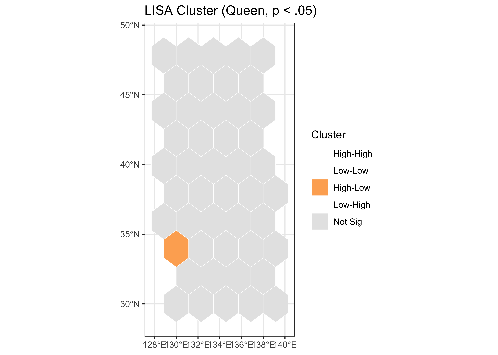
LISAでは47都道府県それぞれについて仮説検定を行うため、多重比較の問題が生じます。有意水準 \(\alpha = .05\) で47回の検定を行うと、空間自己相関が全くなくても、偶然だけで約2–3個の「有意」な地域が検出されてしまいます。
Benjamini-Hochberg（BH）法によるFDR（False Discovery Rate）補正は、「有意と判定された地域のうち、偽陽性が占める割合」を制御します。BH法はBonferroni法より緩やかで、探索的分析に適しています。
LISA分析では、補正前と補正後の両方の地図を報告してください。補正前に「有意」だったクラスタが補正後に消失した場合、それは偶然による偽陽性である可能性が高いです。補正後も残るクラスタは、より信頼性の高い空間パターンと判断できます。
# spdep::localmoran のZ統計から両側p値を算出し、BHでFDR補正
loc2 <- spdep::localmoran(map_df$eng_score, lw_queen)
p_two <- 2 * pnorm(-abs(loc2[, "Z.Ii"]))
pii_fdr <- p.adjust(p_two, method = 'BH')
z <- as.numeric(scale(map_df$eng_score))
lag_z <- spdep::lag.listw(lw_queen, z)
cluster_fdr <- ifelse(pii_fdr >= 0.05, 'Not Sig (FDR)',
ifelse(z>0 & lag_z>0, 'High-High',
ifelse(z<0 & lag_z<0, 'Low-Low',
ifelse(z>0 & lag_z<0, 'High-Low', 'Low-High'))))
map_df$cluster_fdr <- factor(
cluster_fdr,
levels = c('High-High','Low-Low','High-Low','Low-High','Not Sig (FDR)')
)
ggplot(map_df) +
geom_sf(aes(fill = cluster_fdr), color = 'white') +
scale_fill_manual(
values = c('High-High'='#d73027','Low-Low'='#4575b4','High-Low'='#fdae61','Low-High'='#74add1','Not Sig (FDR)'='grey85'),
drop = FALSE
) +
theme_bw() +
labs(title = 'LISA Cluster (BH-corrected, p < .05)', fill = 'Cluster')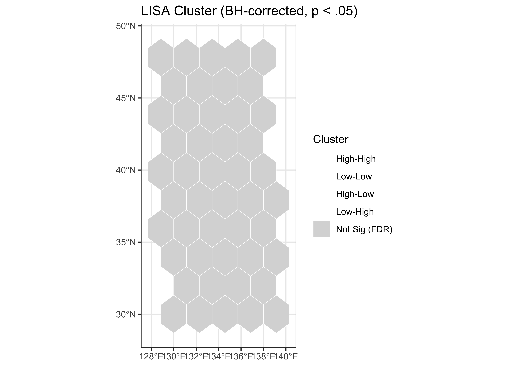
Moran 散布図は、各地域の標準化スコア \(z\) を横軸に、その空間ラグ \(\mathbf{W}z\)（隣接地域の加重平均値）を縦軸にプロットしたものです。行標準化 \(\mathbf{W}\) を用いた場合、この散布図に当てはめた回帰直線の傾きが Moran’s I に近似します。
散布図の4象限は LISA クラスタの4タイプに対応しています。
第I象限と第III象限に点が多いほど正の空間自己相関が強く、回帰直線の傾きが大きくなります。
df_moran <- tibble::tibble(z = z, lag_z = lag_z)
ggplot(df_moran, aes(x = z, y = lag_z)) +
geom_point(color = '#2c3e50') +
geom_smooth(method = 'lm', se = FALSE, color = 'steelblue') +
geom_hline(yintercept = 0, color = 'grey60') +
geom_vline(xintercept = 0, color = 'grey60') +
theme_bw() +
labs(title = "Moran's I Scatter Plot", x = 'Standardized Score (z)', y = 'Spatial Lag (Wz)')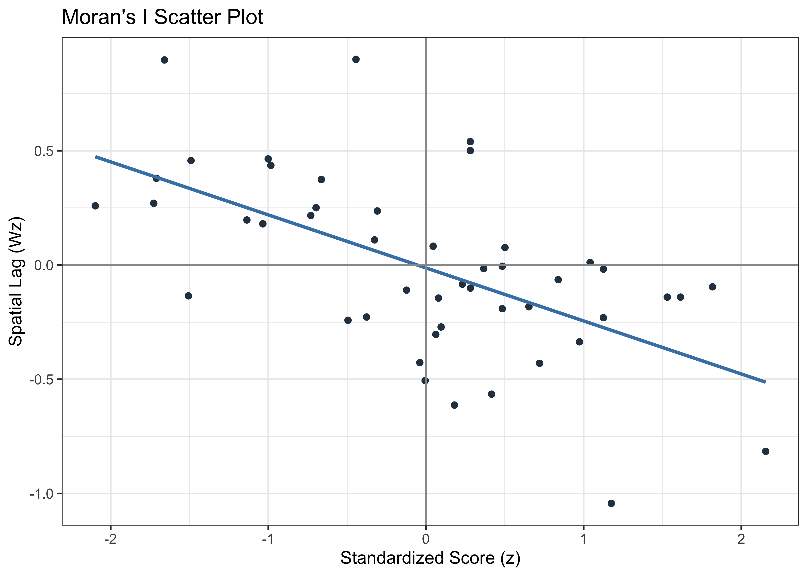
ここまでで、空間自己相関の存在を確認し、クラスタの位置を特定しました。次の問いは、この空間依存性を回帰モデルでどのように扱うかです。
通常のOLS回帰（第4章で詳述）では、誤差項 \(\varepsilon\) が互いに独立であると仮定します。しかし、前節で空間的自己相関の存在が確認されたデータでは、この仮定が破れている可能性があります。時系列分析（第13章）で時間的自己相関がOLSの標準誤差を歪めたのと全く同じ構造の問題です。残差に空間自己相関が残っていると、標準誤差が過小推定され、p値が不当に小さくなり、第一種の過誤率が膨張します。
空間依存性が生じるメカニズムには、根本的に異なる2つの「物語」（ストーリー）があります。
物語1: 空間ラグ（SAR: Spatial Autoregressive Model）
\[Y = \rho \mathbf{W} Y + X\beta + \varepsilon\]
結果変数 \(Y\) 自身が空間的に波及する。ある都道府県の英語スコアが、隣接する都道府県の英語スコアに直接的に影響する。パラメータ \(\rho\) はこのフィードバックの強さを表す。
英語教育での例: 教員の流動性（ある都道府県の教員が隣県に異動し指導法を持ち込む）、政策模倣（成功事例が隣県の政策に影響を与える）、共通メディアの影響（同じ地域ブロックの教育委員会が連携する）。
物語2: 空間誤差（SEM: Spatial Error Model）
\[Y = X\beta + u, \quad u = \lambda \mathbf{W} u + \varepsilon\]
\(Y\) 自体は空間的に波及しないが、モデルに含まれていない欠落変数が空間的に相関している。パラメータ \(\lambda\) はこの誤差の空間相関の強さを表す。
英語教育での例: 地域の社会経済的条件（所得水準、産業構造）、歴史的な教育投資の蓄積、地理的条件（山間部での教員確保の困難さ）など、共通の背景要因が近隣の都道府県で類似している。
選択の指針: SARは「隣人の結果が自分に影響する」という因果的仮説を、SEMは「共通の未測定要因が隣人間で類似する」という相関的仮説を反映する。どちらが妥当かは、理論的考察とデータの診断（次節のLM検定）の両面から判断する。
空間回帰モデルの推定に進む前に、まず OLS を基準モデルとして適合し、その残差に空間自己相関が残っているかどうかを診断します。そして、ラグランジュ乗数（LM）検定で、ラグモデル（SAR）と誤差モデル（SEM）のどちらの方向にOLSを改善すべきかの手がかりを得ます。この手順は、OLSを出発点として空間モデルを選択する標準的なワークフローです。
# OLS と残差の Moran 検定
ols <- lm(eng_score ~ teacher_toeic + eiken_rate, data = dat_reg)
spdep::lm.morantest(ols, lw_queen)
Global Moran I for regression residuals
data:
model: lm(formula = eng_score ~ teacher_toeic + eiken_rate, data =
dat_reg)
weights: lw_queen
Moran I statistic standard deviate = -0.90854, p-value = 0.8182
alternative hypothesis: greater
sample estimates:
Observed Moran I Expectation Variance
-0.098883331 -0.014920001 0.008540664 残差の Moran 検定が有意であれば、OLS の誤差項に空間自己相関が残っていることが確認されます。
冒頭の研究課題3で触れた「残差が地理的にパターンを持つ」問題を、地図上で確認します。もし残差が空間的にランダムに分布していれば、地図上で赤（過大推定）と青（過小推定）がまんべんなく混在するはずです。逆に、特定の地域に赤や青が集中していれば、空間自己相関の視覚的な証拠です。
map_df$ols_resid <- residuals(ols)
ggplot(map_df) +
geom_sf(aes(fill = ols_resid), color = 'white') +
scale_fill_gradient2(
low = '#4575b4', mid = 'white', high = '#d73027',
midpoint = 0, name = 'Residual'
) +
theme_bw() +
labs(title = 'OLS Residuals: Spatial Distribution',
subtitle = 'Red = overestimation, Blue = underestimation')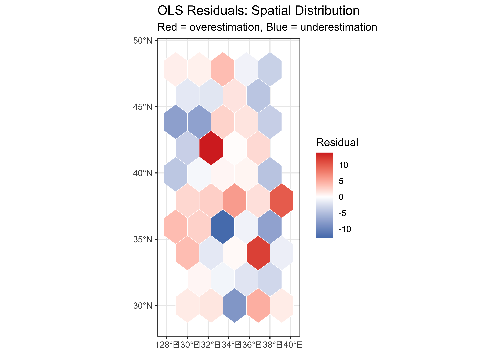
次に、LM 検定でモデル選択の方向性を探ります。
# OLS のラグ／誤差に対する LM とロバストLM
lm_tests <- spdep::lm.LMtests(ols, lw_queen, test = c("LMlag","LMerr","RLMlag","RLMerr"))
lm_tests
Rao's score (a.k.a Lagrange multiplier) diagnostics for spatial
dependence
data:
model: lm(formula = eng_score ~ teacher_toeic + eiken_rate, data =
dat_reg)
test weights: listw
RSlag = 1.1042, df = 1, p-value = 0.2933
Rao's score (a.k.a Lagrange multiplier) diagnostics for spatial
dependence
data:
model: lm(formula = eng_score ~ teacher_toeic + eiken_rate, data =
dat_reg)
test weights: listw
RSerr = 1.0231, df = 1, p-value = 0.3118
Rao's score (a.k.a Lagrange multiplier) diagnostics for spatial
dependence
data:
model: lm(formula = eng_score ~ teacher_toeic + eiken_rate, data =
dat_reg)
test weights: listw
adjRSlag = 0.10453, df = 1, p-value = 0.7465
Rao's score (a.k.a Lagrange multiplier) diagnostics for spatial
dependence
data:
model: lm(formula = eng_score ~ teacher_toeic + eiken_rate, data =
dat_reg)
test weights: listw
adjRSerr = 0.023408, df = 1, p-value = 0.8784LM 検定は「OLS に対して、空間ラグまたは空間誤差を追加することで有意に適合が改善するか」を問う検定です。ロバスト版（RLM）は、もう一方の空間効果が同時に存在する場合でも頑健な判定を提供します。
LM 検定の結果に基づき、空間ラグモデル（SAR）と空間誤差モデル（SEM）を推定します。AIC の比較と、残差の空間相関の解消を確認することで、モデルを選択します。
# SAR / SEM（W は Queen）
sar <- spatialreg::lagsarlm(eng_score ~ teacher_toeic + eiken_rate, data = dat_reg, listw = lw_queen)
sem <- spatialreg::errorsarlm(eng_score ~ teacher_toeic + eiken_rate, data = dat_reg, listw = lw_queen)
list(
AIC = c(OLS = AIC(ols), SAR = AIC(sar), SEM = AIC(sem)),
SAR_rho = sar$rho,
SEM_lambda = sem$lambda
)$AIC
OLS SAR SEM
289.2456 289.7740 289.8992
$SAR_rho
rho
-0.3000306
$SEM_lambda
lambda
-0.2894051 解釈のポイント:
SAR モデルでは、\(\rho \mathbf{W} Y\) の項があるため、説明変数 \(X\) の係数はOLSのそれとは異なる解釈になります。SAR の係数は「直接効果」のみを反映し、空間フィードバック（間接効果）を含みません。正確な効果の大きさを知るには、Section 6.4 のインパクト分解を使用してください。
LM 検定でラグと誤差の両方が有意な場合、あるいは理論的に説明変数の空間的波及も考慮したい場合には、以下の拡張モデルを検討します。
# SDM: 説明変数の空間ラグも含める（Durbin=TRUE で全てラグ）
sdm <- spatialreg::lagsarlm(eng_score ~ teacher_toeic + eiken_rate, data = dat_reg, listw = lw_queen, Durbin = TRUE)
# SARAR(SAC): ラグ + 誤差
sarar <- spatialreg::sacsarlm(eng_score ~ teacher_toeic + eiken_rate, data = dat_reg, listw = lw_queen)
cbind(
Model = c('OLS','SAR','SEM','SDM','SARAR'),
AIC = c(AIC(ols), AIC(sar), AIC(sem), AIC(sdm), AIC(sarar))
) |>
as.data.frame() |>
gt() |>
tab_header(title = 'Model Comparison (AIC)')| Model Comparison (AIC) | |
| Model | AIC |
|---|---|
| OLS | 289.24557558019 |
| SAR | 289.774021667042 |
| SEM | 289.89920243912 |
| SDM | 293.682205108802 |
| SARAR | 291.693419395631 |
SDM は説明変数 \(X\) とその空間ラグ \(\mathbf{W}X\) の間に強い多重共線性が生じやすく、推定が不安定になることがあります。理論的根拠がある場合は、特定の変数のみ空間ラグを導入する「部分ダービン」（例: Durbin = ~ eiken_rate）も検討してください。
空間ラグモデル（SAR/SDM）では、ある都道府県における説明変数の変化が、空間フィードバック \(\rho\) を通じて隣接都道府県に「波及」し、さらにその波及が戻ってくるという連鎖が生じます。このため、係数の値をそのまま「効果の大きさ」と解釈することはできません。
impacts() 関数は、この波及の連鎖を以下の3つに分解します。
英語教育の文脈で考えると、ある都道府県で教員のTOEICスコアが1標準偏差向上した場合、直接効果はその都道府県の英語スコアへの影響を、間接効果は教員の流動性や政策模倣を通じた隣接都道府県への波及を表します。
# SAR / SDM の効果分解（モンテカルロ）
imp_sar <- spatialreg::impacts(sar, listw = lw_queen, R = 1000)
imp_sdm <- spatialreg::impacts(sdm, listw = lw_queen, R = 1000)
# SAR モデルのインパクト分解
imp_sar_summary <- summary(imp_sar, zstats = TRUE)
as.data.frame(imp_sar_summary$res) |>
tibble::rownames_to_column("Type") |>
gt() |>
tab_header(title = "SAR Model: Spatial Impact Effects") |>
fmt_number(columns = where(is.numeric), decimals = 3)| SAR Model: Spatial Impact Effects | |||
| Type | direct | indirect | total |
|---|---|---|---|
| 1 | −0.028 | 0.007 | −0.021 |
| 2 | −6.675 | 1.632 | −5.044 |
# SDM モデルのインパクト分解
imp_sdm_summary <- summary(imp_sdm, zstats = TRUE)
as.data.frame(imp_sdm_summary$res) |>
tibble::rownames_to_column("Type") |>
gt() |>
tab_header(title = "SDM Model: Spatial Impact Effects") |>
fmt_number(columns = where(is.numeric), decimals = 3)| SDM Model: Spatial Impact Effects | |||
| Type | direct | indirect | total |
|---|---|---|---|
| 1 | −0.028 | 0.014 | −0.014 |
| 2 | −7.414 | −2.060 | −9.474 |
ここまでの分析をまとめると、空間回帰モデルの選択は以下のチェックリストに沿って行います。
impacts()）で効果を報告する。空間回帰モデルの枠組みを習得したところで、次は政策評価という応用場面に移ります。空間構造を考慮したDID（差の差法）の推定と、その限界について検討します。
英語教育の政策研究において、最も実践的な問いの一つは「ある施策は本当に効果があったのか」です。日本では、都道府県ごとに英語教育改革の導入時期や内容が異なることがあり、この変異を利用して因果効果を推定する手法が差の差法（Difference-in-Differences: DID）です。
DIDの基本的なアイデアは単純です。施策を導入した都道府県（処置群）と導入しなかった都道府県（対照群）の差を、施策の前後で比較します。施策前の差を「事前からの差」として差し引くことで、時間に不変な交絡要因を除去します。
しかし、前節で確認したように英語スコアには空間自己相関があります。このことは、DID分析に固有の課題をもたらします。もし施策を導入した都道府県の「効果」が隣接する未導入都道府県にも波及（スピルオーバー）しているなら、標準的なDIDの推定量にバイアスが生じる可能性があります。この問題については Section 7.4 で詳述します。
まず、施策境界（2021年）の前後で各都道府県の平均英語スコアの差分を計算し、地図上に可視化します。この地図は、施策効果の空間分布についての直感を得るための探索的なステップです。
prepost <- panel |>
mutate(period = ifelse(year < policy_year, 'pre', 'post')) |>
group_by(pref_name, period) |>
summarise(mean_score = mean(eng_score, na.rm = TRUE), .groups = 'drop') |>
tidyr::pivot_wider(names_from = period, values_from = mean_score) |>
mutate(diff_post_pre = post - pre)
map_diff <- pref_sf |>
left_join(prepost, by = 'pref_name')
ggplot(map_diff) +
geom_sf(aes(fill = diff_post_pre), color = 'white') +
scale_fill_gradient2(low = '#4575b4', mid = 'white', high = '#d73027', midpoint = 0, name = 'Diff') +
theme_bw() +
labs(title = paste0('Pre-Post Difference (Policy Year: ', policy_year, ')'))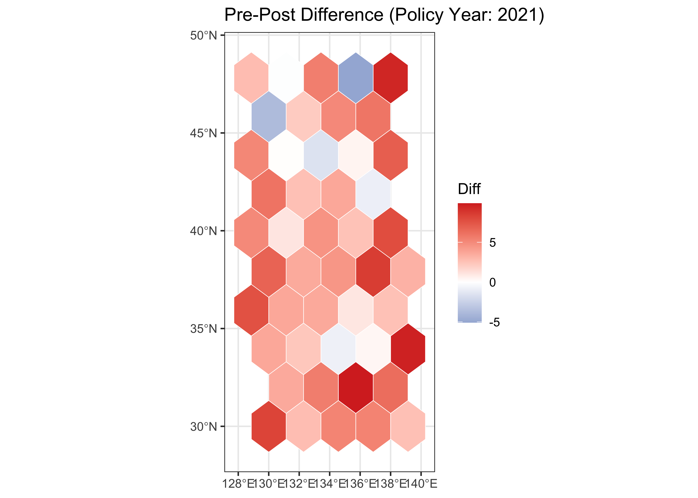
施策の前後でスコアの空間分布がどのように変化したかを、年次別の小地図（small multiples）で確認します。facet_wrap() は1つの変数でデータを分割し、各グループを独立したパネルとして並べる ggplot2 の機能です。空間データの時間変化を俯瞰するのに最適な手法です。
# 施策前後の代表年を選択
selected_years <- c(2016, 2018, 2020, 2022, 2024)
facet_df <- pref_sf |>
left_join(
panel |> filter(year %in% selected_years),
by = 'pref_name'
)
# 全パネルで共通のカラースケールを使用（比較可能性の担保）
global_limits <- range(facet_df$eng_score, na.rm = TRUE)
ggplot(facet_df) +
geom_sf(aes(fill = eng_score), color = 'white', linewidth = 0.2) +
scale_fill_viridis_c(option = 'C', limits = global_limits,
oob = scales::squish, name = 'Score') +
facet_wrap(~ year, ncol = 5) +
theme_bw(base_size = 10) +
theme(axis.text = element_blank(), axis.ticks = element_blank()) +
labs(title = 'English Score by Prefecture: Annual Comparison')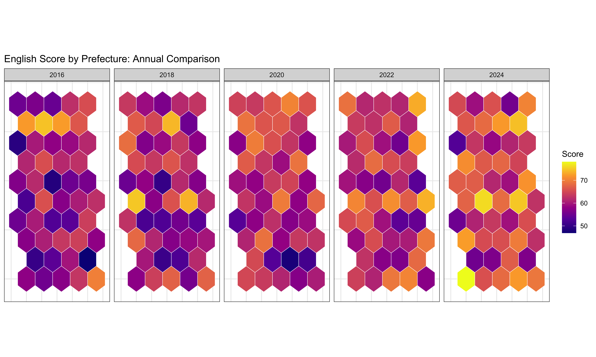
limits = global_limits で全パネルのカラースケールを統一しています。これを省略すると各パネルが独自のスケールを持ち、色の比較が不可能になります。oob = scales::squish は範囲外の値を端に押し込む処理です。外れ値がある場合に有用です。treated = 1）の色が変化しているかどうかに注目してください。DIDの核心的な仮定である並行トレンドを視覚的に確認します。施策導入前の期間において、処置群と対照群のスコアが同じ傾向（平行な軌跡）をたどっているかどうかを確認します。もし事前期間でトレンドが交差したり大きく乖離したりしている場合、DIDの前提が崩れている可能性があります。
# 処置群・対照群別の年次平均スコア
trend_df <- panel |>
mutate(group = ifelse(treated == 1, 'Treated', 'Control')) |>
group_by(group, year) |>
summarise(mean_score = mean(eng_score, na.rm = TRUE), .groups = 'drop')
ggplot(trend_df, aes(x = year, y = mean_score, color = group)) +
geom_line(linewidth = 1) +
geom_point(size = 2.5) +
geom_vline(xintercept = policy_year, linetype = 'dashed', color = 'grey40') +
annotate('text', x = policy_year + 0.3, y = max(trend_df$mean_score),
label = 'Policy Year', hjust = 0, color = 'grey40', size = 3.5) +
scale_color_manual(values = c('Control' = '#4575b4', 'Treated' = '#d73027')) +
theme_bw() +
labs(title = 'Parallel Trends Check: Treated vs Control',
x = 'Year', y = 'Mean English Score', color = 'Group')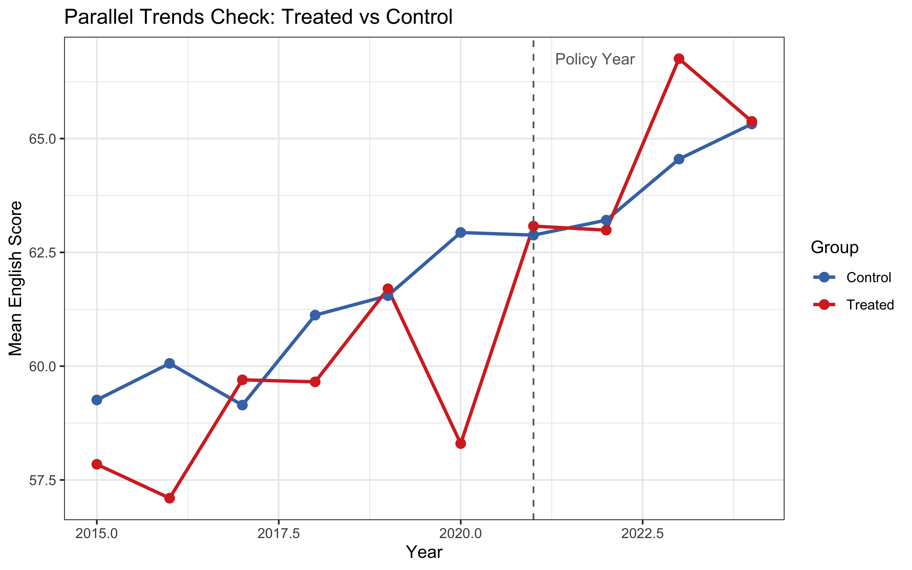
読み方: 破線の左側（施策導入前）で2本の線がほぼ平行であれば、並行トレンド仮定は視覚的に支持されます。破線の右側（施策導入後）で処置群の線が対照群より上方に乖離していれば、施策の効果を示唆します。
本章のコードには、データ処理を一般化するために自前の関数を定義する箇所があります。基本パターンは以下の通りです。
my_function <- function(arg1, arg2) {
# 1. 前処理
processed <- arg1 |> some_operation()
# 2. 計算
result <- calculation(processed, arg2)
# 3. 戻り値（最後の式が自動的に返される）
result
}function() で引数を定義し、{} 内に処理を記述する。return() は省略可能）。nb_to_lines() や summarize_w() もこのパターンに従っている。固定効果DIDでは、都道府県固定効果（各都道府県の時間不変な特性を吸収）と年固定効果（全都道府県に共通の時間トレンドを吸収）を含めることで、交絡要因を統制します。fixest::feols は高速な固定効果推定とロバスト標準誤差の計算に対応しています。
did <- fixest::feols(
eng_score ~ treated:post + teacher_toeic + eiken_rate | pref_name + year,
data = panel
)
broom::tidy(did, conf.int = TRUE) |>
gt() |>
tab_header(title = "Difference-in-Differences Estimate") |>
fmt_number(columns = where(is.numeric), decimals = 3)| Difference-in-Differences Estimate | ||||||
| term | estimate | std.error | statistic | p.value | conf.low | conf.high |
|---|---|---|---|---|---|---|
| teacher_toeic | 0.018 | 0.008 | 2.176 | 0.030 | 0.002 | 0.034 |
| eiken_rate | −3.138 | 8.103 | −0.387 | 0.699 | −19.067 | 12.791 |
| treated:post | 2.166 | 1.172 | 1.847 | 0.065 | −0.139 | 4.471 |
読み方: treated:post の係数が平均処置効果（ATT: Average Treatment Effect on the Treated）の推定量です。本シミュレーションでは真の効果 \(\tau = 3.0\) を設定しているため、推定値がこの値に近いかどうかで手法の妥当性を検証できます。
DIDの識別の核心は並行トレンド仮定（parallel trends assumption）です。施策が導入されなかったと仮定した場合、処置群と対照群は同じトレンドをたどったであろうという仮定です。
前提を確認するには:
DID推定において、標準誤差の扱いは推論の信頼性に直結します。空間相関のある誤差構造の下では、通常のOLS標準誤差は過小推定される傾向があります。最低限、都道府県レベルでのクラスタ化が必要です。さらに保守的な推定が必要な場合は、都道府県と年の二方向クラスタも検討できます。
# 地域クラスタで頑健化
broom::tidy(did, cluster = ~ pref_name, conf.int = TRUE) |>
gt() |>
tab_header(title = "DID: Cluster-Robust SE (Prefecture)") |>
fmt_number(columns = where(is.numeric), decimals = 3)| DID: Cluster-Robust SE (Prefecture) | ||||||
| term | estimate | std.error | statistic | p.value | conf.low | conf.high |
|---|---|---|---|---|---|---|
| teacher_toeic | 0.018 | 0.008 | 2.316 | 0.025 | 0.002 | 0.034 |
| eiken_rate | −3.138 | 8.262 | −0.380 | 0.706 | −19.767 | 13.492 |
| treated:post | 2.166 | 0.941 | 2.301 | 0.026 | 0.271 | 4.061 |
# 地域×年の二方向クラスタ
broom::tidy(did, cluster = ~ pref_name + year, conf.int = TRUE) |>
gt() |>
tab_header(title = "DID: Two-Way Cluster SE (Prefecture + Year)") |>
fmt_number(columns = where(is.numeric), decimals = 3)| DID: Two-Way Cluster SE (Prefecture + Year) | ||||||
| term | estimate | std.error | statistic | p.value | conf.low | conf.high |
|---|---|---|---|---|---|---|
| teacher_toeic | 0.018 | 0.006 | 2.794 | 0.021 | 0.003 | 0.032 |
| eiken_rate | −3.138 | 7.816 | −0.401 | 0.697 | −20.818 | 14.543 |
| treated:post | 2.166 | 0.658 | 3.292 | 0.009 | 0.678 | 3.654 |
比較のポイント: クラスタ化により標準誤差が大きくなり、信頼区間が広がることが一般的です。もし通常の標準誤差では有意だった結果がクラスタ化後に非有意になる場合、その結果の頑健性には疑問が残ります。二方向クラスタはより保守的（自由度が低下）ですが、時間的・空間的な相関の両方を考慮できます。
DIDの因果推論としての妥当性は、SUTVA（Stable Unit Treatment Value Assumption）に依存しています。SUTVAとは、ある都道府県への処置（施策導入）が、他の都道府県の結果に影響しないという仮定です。
空間的な文脈では、この仮定がしばしば危うくなります。たとえば、以下のようなシナリオを考えてみてください。
診断方法:
対処法:
第13章で時系列データに対する移動平均（moving average）を学んだように、空間データにも類似の平滑化手法があります。基本的なアイデアは、各地域の値を「自身の値と隣接地域の平均値のブレンド」で置き換えることです。混合比率 \(\alpha\) はこのブレンドの強さを制御します。\(\alpha = 0\) は元データそのまま、\(\alpha = 1\) は隣接平均のみを使用します。
空間平滑化は、市区町村レベルなどの小地域データでサンプルサイズが小さく、個々の値のノイズが大きい場合に、広域的なパターンを視覚的に浮かび上がらせるのに有効です。政策立案者への報告では、ノイズの多い生データより平滑化地図のほうが都市-農村格差などの構造的パターンを明確に伝達できます。
空間平滑化は探索的な可視化ツールであり、推定手法ではありません。平滑化した従属変数に回帰分析を適用すると、バイアスが導入されます。推論には空間回帰モデル（Section 6）を使用してください。また、\(\alpha\) が大きすぎると地域間の真の差異が潰され、有益な情報が失われる点にも注意してください。
lag_y <- spdep::lag.listw(lw_queen, map_df$eng_score)
alpha <- 0.5
map_df <- map_df |>
mutate(smooth_score = (1 - alpha) * eng_score + alpha * lag_y)
g1 <- ggplot(map_df) + geom_sf(aes(fill = eng_score), color = 'white') +
scale_fill_viridis_c(option = 'C') + theme_bw() + labs(title = 'Raw Score')
g2 <- ggplot(map_df) + geom_sf(aes(fill = smooth_score), color = 'white') +
scale_fill_viridis_c(option = 'C') + theme_bw() + labs(title = paste0('Smoothed (alpha = ', alpha, ')'))
g1; g2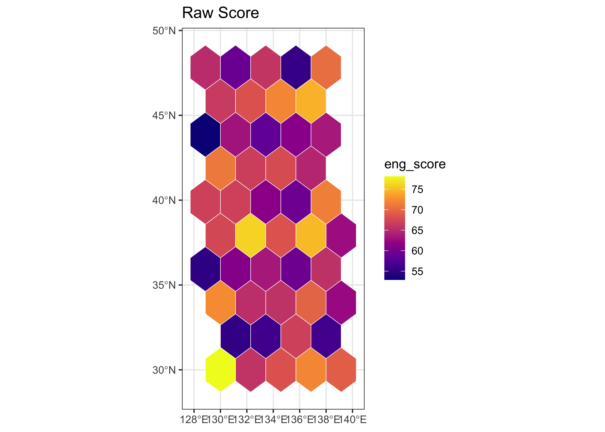
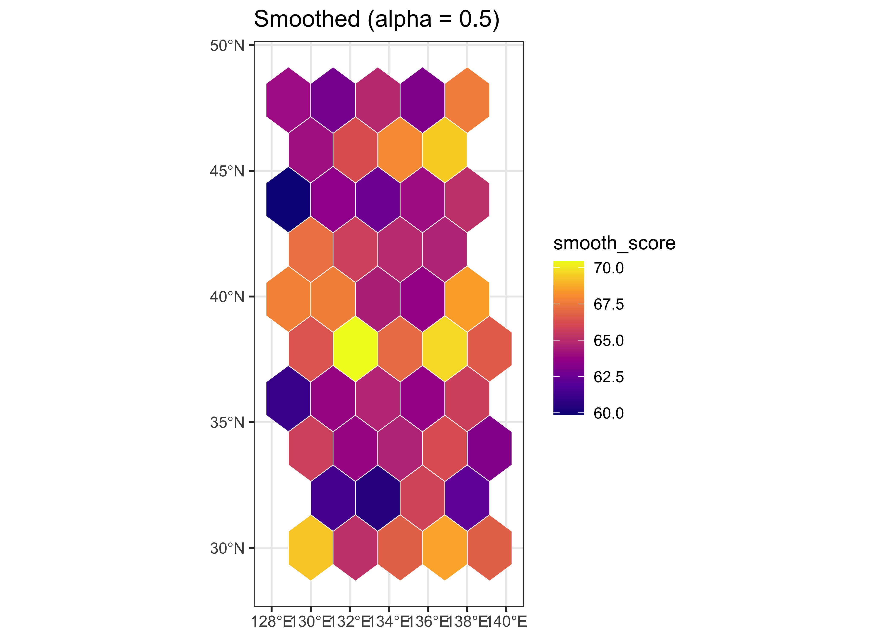
2つの地図の比較: 生データの地図（左）は都道府県間のバラツキが大きく、隣接する都道府県でも値が大きく異なる箇所があります。平滑化後の地図（右）では、そうした局所的なノイズが抑制され、より広域的な空間パターンが浮かび上がります。ただし、\(\alpha = 0.5\) は例示的な値であり、分析目的に応じて調整が必要です。
ここまでの地図はすべて静的な画像でした。研究発表やデータ探索では、マウス操作で拡大・縮小やホバー情報表示ができるインタラクティブ地図が有用です。leaflet パッケージは、Webブラウザ上で動作するインタラクティブ地図を数行のコードで作成できます。
leaflet(data) |> # leaflet オブジェクトを作成
addProviderTiles("CartoDB") |> # 背景タイル（地理院、OpenStreetMap 等）
addPolygons( # ポリゴンを追加
fillColor = ~pal(variable), # ~ で変数を参照（aes に相当）
popup = ~label # クリック時のポップアップ
) |>
addLegend(pal = pal, values = ~variable) # 凡例+ の代わりに |> でレイヤを重ねる。~variable は ggplot2 の aes(fill = variable) に相当するフォーミュラ記法。addProviderTiles() で背景地図を選択でき、地理的文脈を直感的に把握できる。pacman::p_load(leaflet)
# LISA クラスタの色パレット
cluster_colors <- c(
'High-High' = '#d73027', 'Low-Low' = '#4575b4',
'High-Low' = '#fdae61', 'Low-High' = '#74add1', 'Not Sig' = '#e0e0e0'
)
# ポップアップ用のラベルを作成
map_df$popup_label <- paste0(
'<strong>', map_df$pref_name, '</strong><br/>',
'Score: ', round(map_df$eng_score, 1), '<br/>',
'Cluster: ', map_df$cluster
)
# CRS を WGS84 に変換（leaflet は EPSG:4326 を要求）
map_leaf <- st_transform(map_df, 4326)
# カラーパレット関数
pal <- colorNumeric(palette = 'viridis', domain = map_leaf$eng_score)
leaflet(map_leaf) |>
addProviderTiles('CartoDB.Positron') |>
addPolygons(
fillColor = ~pal(eng_score),
fillOpacity = 0.7,
color = 'white',
weight = 1,
popup = ~popup_label,
highlightOptions = highlightOptions(
weight = 3, color = '#333', fillOpacity = 0.9
)
) |>
addLegend(
pal = pal, values = ~eng_score,
title = 'English Score', position = 'bottomright'
)操作方法: マウスホイールで拡大・縮小、ドラッグで移動、都道府県をクリックするとポップアップで数値と LISA クラスタの分類が表示されます。この種のインタラクティブ地図は、探索的分析やプレゼンテーションに特に有効です。
以下のトピックは、本章の主要分析をさらに拡張するための参考資料です。いずれも追加的なパッケージのインストールや計算資源を必要とするため、コードテンプレート（一部は eval = FALSE 相当）として提供します。実データへの適用時に参照してください。
空間パネルモデル（splm::spml）は、「固定効果 × 空間ラグ/誤差」を同時に推定します。Section 7 のDIDでは fixest で固定効果を処理しましたが、splm は空間重みを明示的に組み込んだパネル推定を提供します。
if (Sys.getenv("CI") != "true") {
pacman::p_load(splm, plm)
spml_mod <- splm::spml(
eng_score ~ teacher_toeic + eiken_rate + treated:post,
data = panel, listw = lw_queen,
model = 'within', effect = 'twoways', lag = TRUE, spatial.error = 'b',
index = c('pref_name','year')
)
spml_summary <- summary(spml_mod)
as.data.frame(spml_summary$CoefTable) |>
tibble::rownames_to_column("Term") |>
gt() |>
tab_header(title = "Spatial Panel Model (SAR + SEM)") |>
fmt_number(columns = where(is.numeric), decimals = 3)
} else {
message("CI環境のため空間パネルをスキップ")
}| Spatial Panel Model (SAR + SEM) | ||||
| Term | Estimate | Std. Error | t-value | Pr(>|t|) |
|---|---|---|---|---|
| lambda | −0.115 | 0.771 | −0.149 | 0.881 |
| rho | −0.037 | 0.759 | −0.049 | 0.961 |
| teacher_toeic | 0.017 | 0.008 | 2.263 | 0.024 |
| eiken_rate | −2.754 | 7.539 | −0.365 | 0.715 |
| treated:post | 2.375 | 1.729 | 1.374 | 0.169 |
ベイズ階層モデル（INLA/brms）は事前分布を通じた正則化や不確実性の完全な定量化を提供します。GWR（Geographically Weighted Regression）は係数の空間的変異を探索的に可視化します。いずれもモデル設計と計算資源への配慮が必要です。
# INLA: BYM/ICAR（要:INLAのセットアップ）
if (Sys.getenv("CI") != "true") {
pacman::p_load(INLA)
nb <- nb_queen; W <- spdep::nb2mat(nb, style = 'B')
# 例: ICAR ランダム効果（擬似コード）
# formula <- eng_score ~ teacher_toeic + eiken_rate + f(pref_name, model='icar', graph=W)
# fit_inla <- INLA::inla(formula, family='gaussian', data = as.data.frame(dat_reg))
} else {
message("INLA 未インストールのためスキップ")
}
# brms: CAR（要:rstan/brmsセットアップ）
if (Sys.getenv("CI") != "true") {
pacman::p_load(brms)
# fit_brms <- brm(eng_score ~ teacher_toeic + eiken_rate + car(adj = W), data = dat_reg)
} else {
message("brms 未インストールのためスキップ")
}
# GWR: 局所回帰（sp系クラスに変換）
if (Sys.getenv("CI") != "true") {
pacman::p_load(GWmodel)
spobj <- as(map_df, 'Spatial')
bw <- GWmodel::bw.gwr(eng_score ~ teacher_toeic + eiken_rate, data = spobj, approach='AICc', kernel='bisquare', adaptive=TRUE)
gwr <- GWmodel::gwr.basic(eng_score ~ teacher_toeic + eiken_rate, data = spobj, bw = bw, kernel='bisquare', adaptive=TRUE)
} else {
message("GWmodel 未インストールのためスキップ")
}Adaptive bandwidth (number of nearest neighbours): 36 AICc value: 293.1867
Adaptive bandwidth (number of nearest neighbours): 30 AICc value: 295.3531
Adaptive bandwidth (number of nearest neighbours): 40 AICc value: 292.5891
Adaptive bandwidth (number of nearest neighbours): 42 AICc value: 292.6264
Adaptive bandwidth (number of nearest neighbours): 38 AICc value: 293.159
Adaptive bandwidth (number of nearest neighbours): 40 AICc value: 292.5891 以下の演習は、本章で学んだ概念と手法の理解を深めるために設計されています。単にコードを動かすだけでなく、結果の解釈と研究上の含意を論述することを重視してください。
重み感度と研究結論: 重み行列を Queen から Rook および \(k = 6\) の kNN に変更し、LISA クラスタ図と SAR/SEM のモデル選択がどのように変化するかを比較しなさい。結果が重みの選択に頑健であるか、それとも敏感であるかを1段落で論じなさい。
政策シミュレーション: 処置群の割当ルールを pref_id %% 3 == 0（より多くの処置県）に、効果サイズを tau = 1.5（より小さな効果）に変更して DID を再推定しなさい。クラスタ標準誤差の下で効果は統計的に有意か。検出力（statistical power）の観点から考察しなさい。
空間スピルオーバーの検証: 対照群の都道府県を「処置県に隣接する対照県」と「処置県に隣接しない遠方の対照県」に分類し、施策後の平均英語スコアを比較しなさい。スピルオーバーの証拠はあるか。
インパクト分解の解釈: SAR モデルのインパクト分解から、teacher_toeic の間接効果と直接効果の比率を計算しなさい。間接効果が大きい場合、英語教育政策にとってどのような含意があるかを、学術論文の結果セクションに相応しい文体で記述しなさい。
批判的読解: ある同僚が「Moran’s I が有意ではなかったので、空間モデルは必要ない」と主張している。本章で学んだ内容に基づき、この主張の少なくとも2つの問題点を指摘しなさい。
install.packages('spatialreg') など個別に導入。Mac で C/C++ のビルドが必要な場合は Xcode Command Line Tools を先に導入する。_quarto.yml のフォント設定を確認（本プロジェクトは Noto 系を使用）。st_crs() で確認し、st_transform() で統一する。Web地図は EPSG:4326/3857、面積計測には投影座標を使用する。nb と listw の取り違えが最も多い。nb2listw() を挟むこと。impacts() を使用する。